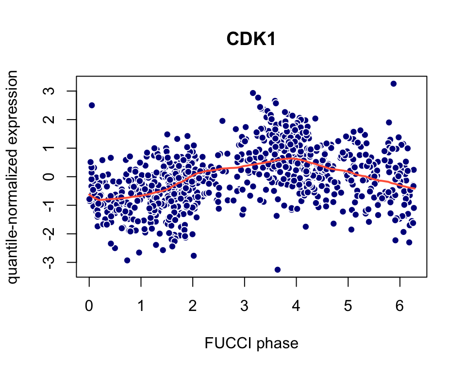
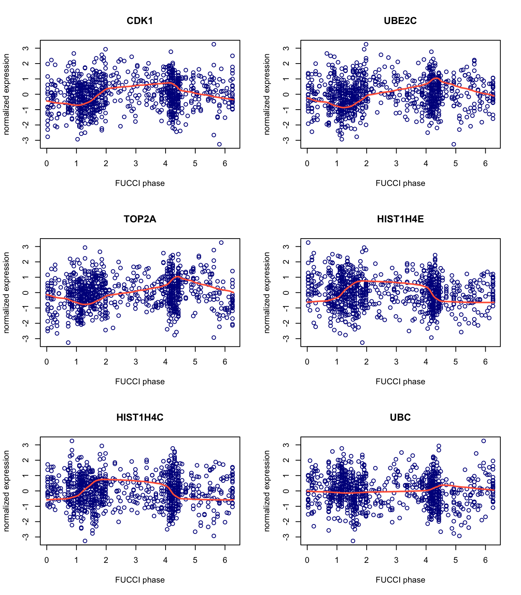

peco is a supervised approach for predicting cell cycle phase in a continuum using single-cell RNA sequencing data. The R package provides functions to build a training data set and predict cell cycle on a continuum.
Our work shows that peco is able to predict continuous cell cylce phase using a small set of cyclic genes, CDK1, UBE2C, TOP2A, HISTH1E, and HISTH1C (These were dentified as cell cycle marker genes in studies of yeast (Spellman et al, 1998) and HeLa cells (Whitfield et al, 2002).
Below, we present two use cases.
In the first use case, we show how to use the built-in training dataset to predict continuous cell cycle.
In the second use case, we show how to create a training data set, then build a predictor using the training data.
peco uses SingleCellExperiment class objects:
training_human provides training data for 101 significant cyclic genes. The data include:
predict.yy, a gene-by-sample matrix (101 x 888) that storing predicted cyclic expression values.
cellcycle_peco_ordered, cell cycle phase in a unit circle (angle), ordered from 0 to 2\(\pi\).
cellcycle_function, functions used for prediction corresponding to the top 101 cyclic genes identified.
sigma, standard error associated with cyclic trends of gene expression.
pve, proportion of variance explained by the cyclic trend.
data(training_human)
peco is integrated with SingleCellExperiment objects in Bioconductor. Here we illustrate using a SingleCellExperiment object to perform cell cycle phase prediction.
sce_top101genes is a SingleCellExpression object for 101 genes and 888 single-cell samples.
data(sce_top101genes) assays(sce_top101genes) #> List of length 1 #> names(1): counts
Transform expression to quantile-normalizesd counts-per-million (CPM) values; peco uses the cpm_quantNormed slot as the input data for predictions.
sce_top101genes <- data_transform_quantile(sce_top101genes) assays(sce_top101genes) #> List of length 3 #> names(3): counts cpm cpm_quantNormed
Generate predictions using cycle_npreg_outsample.
pred_top101genes <- cycle_npreg_outsample(Y_test = sce_top101genes, sigma_est = training_human$sigma[rownames(sce_top101genes),], funs_est = training_human$cellcycle_function[rownames(sce_top101genes)], method.trend = "trendfilter",get_trend_estimates = FALSE)
pred_top101genes$Y contains a SingleCellExperiment object with the predicted cell cycle phase in the colData slot:
head(colData(pred_top101genes$Y)$cellcycle_peco) #> 20170905-A01 20170905-A02 20170905-A03 20170905-A06 20170905-A07 20170905-A08 #> 1.099557 4.680973 2.544690 4.303982 4.052655 1.413717
View the predictions for the CDK1 gene (Ensembl id ENSG00000170312). Because CDK1 is a known cell cycle gene, this visualization serves as a “sanity check” for the predictions.
x <- seq(0,2*pi,length.out = 100) plot(x = colData(pred_top101genes$Y)$theta_shifted, y = assay(pred_top101genes$Y,"cpm_quantNormed")["ENSG00000170312",], pch = 21,col = "white",bg = "darkblue", main = "CDK1",xlab = "FUCCI phase", ylab = "quantile-normalized expression") lines(x = x,y = training_human$cellcycle_function[["ENSG00000170312"]](x), col = "tomato",lwd = 2)

Next, we view the predictions for the top six genes. Here we use fit_cyclical_many to estimate cell cycle.
theta_predict <- colData(pred_top101genes$Y)$cellcycle_peco names(theta_predict) <- rownames(colData(pred_top101genes$Y)) yy_input <- assay(pred_top101genes$Y,"cpm_quantNormed")[1:6,] fit_cyclic <- fit_cyclical_many(Y = yy_input,theta = theta_predict) gene_symbols <- rowData(pred_top101genes$Y)[rownames(yy_input),"hgnc"] x <- seq(0,2*pi,length.out = 100) par(mfrow = c(3,2)) for (i in 1:6) { plot(x = fit_cyclic$cellcycle_peco_ordered,y = yy_input[i,], pch = 1,col = "darkblue",main = gene_symbols[i], xlab = "FUCCI phase",ylab = "normalized expression") lines(x = x,y = fit_cyclic$cellcycle_function[[i]](x), col = "tomato",lwd = 2) }

sessionInfo() #> R version 3.6.2 (2019-12-12) #> Platform: x86_64-apple-darwin15.6.0 (64-bit) #> Running under: macOS Catalina 10.15.7 #> #> Matrix products: default #> BLAS: /Library/Frameworks/R.framework/Versions/3.6/Resources/lib/libRblas.0.dylib #> LAPACK: /Library/Frameworks/R.framework/Versions/3.6/Resources/lib/libRlapack.dylib #> #> locale: #> [1] en_US.UTF-8/en_US.UTF-8/en_US.UTF-8/C/en_US.UTF-8/en_US.UTF-8 #> #> attached base packages: #> [1] parallel stats4 stats graphics grDevices utils datasets #> [8] methods base #> #> other attached packages: #> [1] peco_1.1.15 doParallel_1.0.15 #> [3] iterators_1.0.12 foreach_1.4.7 #> [5] SingleCellExperiment_1.6.0 SummarizedExperiment_1.16.1 #> [7] DelayedArray_0.12.3 BiocParallel_1.18.1 #> [9] matrixStats_0.56.0 Biobase_2.46.0 #> [11] GenomicRanges_1.38.0 GenomeInfoDb_1.22.1 #> [13] IRanges_2.20.2 S4Vectors_0.24.4 #> [15] BiocGenerics_0.32.0 #> #> loaded via a namespace (and not attached): #> [1] viridis_0.5.1 BiocSingular_1.0.0 genlasso_1.4 #> [4] viridisLite_0.3.0 DelayedMatrixStats_1.6.1 assertthat_0.2.1 #> [7] GenomeInfoDbData_1.2.2 vipor_0.4.5 yaml_2.2.0 #> [10] pillar_1.4.3 backports_1.1.5 lattice_0.20-38 #> [13] glue_1.3.1 digest_0.6.23 XVector_0.26.0 #> [16] colorspace_1.4-1 htmltools_0.4.0 Matrix_1.2-18 #> [19] pkgconfig_2.0.3 zlibbioc_1.32.0 purrr_0.3.3 #> [22] mvtnorm_1.0-11 scales_1.1.0 pracma_2.2.9 #> [25] tibble_2.1.3 ggplot2_3.3.0 conicfit_1.0.4 #> [28] magrittr_1.5 crayon_1.3.4 memoise_1.1.0 #> [31] evaluate_0.14 fs_1.3.1 MASS_7.3-51.4 #> [34] beeswarm_0.2.3 geigen_2.3 tools_3.6.2 #> [37] scater_1.12.2 lifecycle_0.1.0 stringr_1.4.0 #> [40] munsell_0.5.0 irlba_2.3.3 compiler_3.6.2 #> [43] pkgdown_1.5.1 rsvd_1.0.2 rlang_0.4.5 #> [46] grid_3.6.2 RCurl_1.98-1.2 BiocNeighbors_1.2.0 #> [49] circular_0.4-93 igraph_1.2.5 bitops_1.0-6 #> [52] rmarkdown_2.3 boot_1.3-23 gtable_0.3.0 #> [55] codetools_0.2-16 R6_2.4.1 gridExtra_2.3 #> [58] knitr_1.26 dplyr_0.8.3 rprojroot_1.3-2 #> [61] desc_1.2.0 stringi_1.4.3 ggbeeswarm_0.6.0 #> [64] Rcpp_1.0.5 tidyselect_0.2.5 xfun_0.11